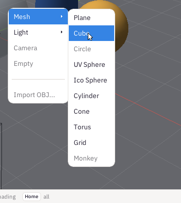

An object is one thing in the scene. Cafesa3D keeps apart where an object is - its location, rotation and scale - and what it is: its shape and its material. That split is Blender's, and it is why you can stretch a box without it forgetting it is a box.
Click it in the view: it is outlined in orange, and the Properties tabs now talk about it. Or click its name in the Outliner, which is handy when an object is small or hidden behind another. Click the empty sky to choose nothing.
Press Shift A (or click Add). Under Mesh are the shapes: Plane, Cube, UV Sphere, Ico Sphere, Cylinder, Cone, Torus and Grid. Under Light, Point is a lamp. The greyed items are still to come.
The new object appears at the 3D cursor, with Blender's own sizes: a cube two metres across, a sphere of one metre radius. It is chosen at once, and the Data tab opens on its numbers. To add something somewhere else, first choose the Cursor tool and click where it should go.

Shift A, then Mesh: every shape Cafesa3D makes. The greyed ones are still to come.
New objects are named as Blender names them: the first cube is Cube, the next Cube.001.
Choose it and press Shift D. The copy follows the mouse: click to put it down, or press Esc to leave it exactly on top of the original, which is useful when you are about to type where it goes. A copy keeps everything of the original: its shape, its size and its material.
Ctrl Z undoes the last change - an object added, moved, coloured or deleted - and Ctrl Shift Z does it again. Every change is a step, so you can go back a long way.
The three dots at the right end of the header, then Open a sample, has three finished scenes: a house, a car and a plane. Each is between seventy and two hundred objects, with textures. Open one, choose its parts and look at their tabs: it is the quickest way to see how a scene is put together.
Opening a sample replaces what you have, and Cafesa3D cannot save a scene yet - saving is on its way. Ctrl Z brings back what you had.